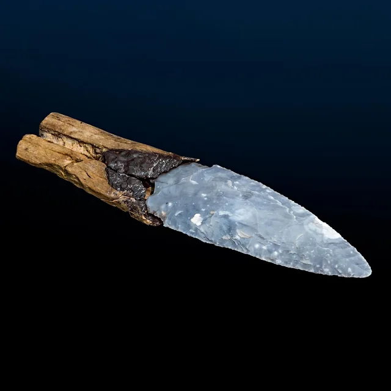
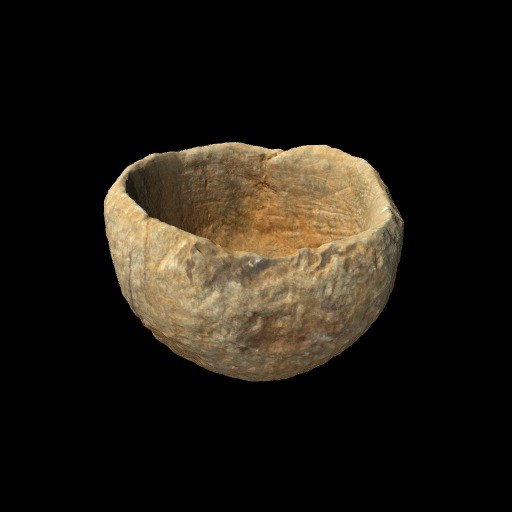
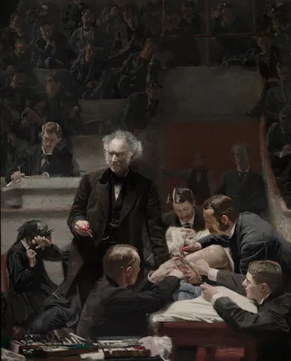
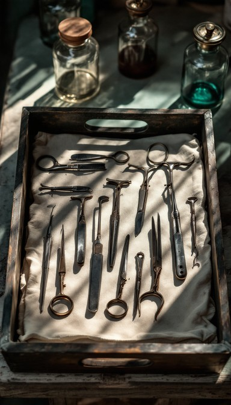
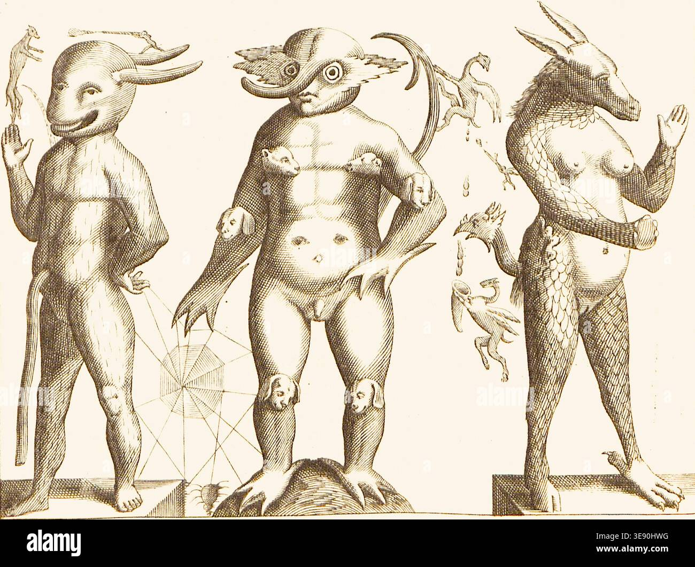
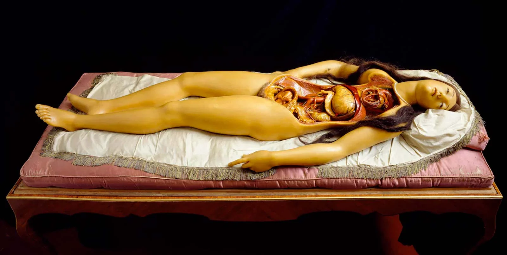

Sala 1: El Umbral de la Caverna (El origen de la representación)
Un contenedor en penumbra que evoca el confinamiento originario. Los muros exhiben una textura pétrea irregular donde se proyecta la oscilación de un fuego artificial. La iluminación cenital se concentra exclusivamente en tres pedestales de lectura dispuestos frente a la réplica de una laguna subterránea.

Daga monolítica de sílex melado con retoque bifacial por presión .
Caracol marino perforado, suspendido por una delgada tira de cuero gastado.

Cuenco de piedra esteatita con concavidad pulida y vestigios de uso primitivo.

Sala 2: El Anfiteatro Circular (La disección y el orden de la máquina)
Estructura concéntrica de gradas de madera que reproduce la arquitectura de un teatro anatómico del siglo XVII. En el centro geométrico de la sala, bajo una luz blanca y focalizada, se ubica una mesa de disección de roble macizo. El espacio se encuentra impregnado por un sutil aroma a fijador químico y cebo de jabón.

Estuche de cirugía que resguarda instrumental quirúrgico, escalpelos de acero templado, ganchos y trépanos.

Grabado teratológico de una trinidad monstruosa: dragón, asedio de perros y criatura acuática.
Lámina teratológica del barroco que revela el fracaso absoluto de la disección como herramienta de control racional. La composición presenta tres personajes mutantes alineados: una figura reptiliana dragónica, una humanoide desollada cuyo cuerpo es asediado por múltiples cabezas de perros brotando violentamente de sus articulaciones, y una criatura anfibia tipo delfín. Esta Pieza 05 opera como la materialización plástica de la disolución de la unidad humana y el asedio de la memoria orgánica.

Réplica en cera coloreada de una Venus anatómica con el vientre gestante abierto en canal.
Escultura anatómica desmontable que expone la vulnerabilidad intrínseca del organismo mediante la mímesis de tejidos y cavidades, operando como el punto de convergencia donde el erotismo y la mirada clínica de la modernidad se superponen para interrogar los misterios de la generación biológica.

Sala 3: El Habitáculo Hermético (La suspensión y el vacío técnico)
Una cabina cúbica de superficies metálicas pulidas y luces testigo de color anaranjado que parpadean de forma intermitente. El ambiente es gélido y confinante. En los ángulos de la estructura se aprecian cultivos controlados de moho biológico. El diseño sonoro de la sala reproduce una respiración humana contenida, mezclada con la estática de frecuencias de radio estropeadas.

Saco de dormir de lona técnica provisto de correas de sujeción herméticas.

Bitácora de viaje con anotaciones marginales manuscritas y gráficas de rotación planetaria tachadas.

Sobres plateados al vacío conteniendo tiras de carne disecada y deshidratada.
Sala 4: El Gabinete Crítico (Dispositivo de Consulta Teórica)
La arquitectura narrativa de El corazón habitante desafía la progresión cronológica tradicional para instaurar una simultaneidad espacial donde el cuerpo opera como territorio de confluencia. Esta propuesta curatorial, titulada Cartografía del Órgano Expanso, se fundamenta en la premisa de que la caverna paleolítica, el anfiteatro anatómico del siglo XVII y la nave espacial contemporánea no constituyen meros escenarios históricos, sino heterotopías donde la carne es confinada, examinada y violentada. Gaston Bachelard, en La poética del espacio, plantea que los lugares que habitamos resguardan los estados de nuestra alma; Daniela Tarazona radicaliza este postulado al mostrar que las prisiones espaciales modifican la anatomía de los personajes, manifestando las crisis de la identidad a través de anomalías biológicas como colas, conejas o cangrejos pectorales.
La disección formal de la obra revela que la aparente fragmentación de los tres hilos conductores responde a una rigurosa estructura especular. Los motivos recurrentes del fluido sanguíneo, la redondez de la nuez cerebral y el latido constante actúan como pasajes intertextuales que disuelven la distancia de milenios. Michel Foucault señala en sus análisis sobre la clínica que la mirada médica del siglo XVII buscaba ordenar el organismo para volverlo legible; el personaje de Harvey en la novela subvierte este paradigma cuando su propia mutación física escapa al saber anatómico, aproximándolo a la experiencia mística de la mujer prehistórica y al extrañamiento del cosmonauta en órbita. La circularidad del tiempo se materializa en el moho que crece en la nave espacial, un elemento orgánico primitivo que coloniza la alta tecnología, uniendo el inicio y el fin de la escala humana.
Traducir esta novela a un dossier curatorial permite abandonar la lógica expositiva del ensayo académico para adoptar una metodología plástica que hace visible la geografía del dolor y el desdoblamiento. La disposición tripartita de las salas demuestra que la escritura de Tarazona es un ejercicio de microcirugía literaria donde el lenguaje deforma el espacio para salvar al cuerpo del olvido. Configurar una sala de lectura bajo estos parámetros estéticos devuelve al espectador la experiencia del pálpito originario, convirtiendo la literatura contemporánea en una estancia que no solo se lee, sino que se padece y se habita.
Fuentes Bibliográficas
Bachelard, Gaston. La poética del espacio. Fondo de Cultura Económica, 2000.
Foucault, Michel. El nacimiento de la clínica: una arqueología de la mirada médica. Siglo XXI Editores, 2004.
Tarazona, Daniela. El corazón habitante. Almadía, 2025.
Declaración de Uso de Inteligencia Artificial
Bajo las directrices éticas estipuladas por la UACM, se declara que el uso de la Inteligencia Artificial se circunscribió estrictamente al desarrollo técnico y la maquetación digital de la propuesta, operando bajo la modalidad de un asesor consultivo para la codificación en lenguajes web. Esta asistencia tecnológica posibilitó la traducción del plano museográfico abstracto a una interfaz interactiva funcional, agilizando el diseño de las hojas de estilo y la estructura digital sin interferir en el plano analítico. De este modo, el entramado teórico, la selección de cédulas, el aparato conceptual y la valoración estética de la obra permanecen como un ejercicio intelectual soberano de la autora.